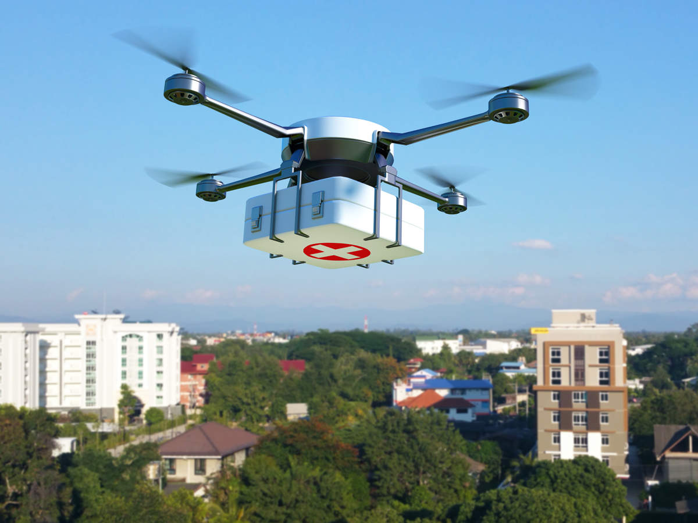
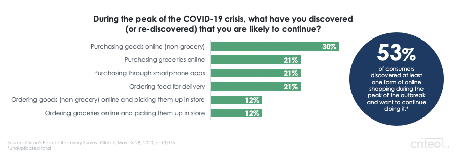

My project will mostly base on 2 fields of technology to support the project. The first is AI and Machine Learning, and the second is Arduino.
Artificial intelligence" is used to describe machines (or computers) with the ability to mimic "cognitive" functions that humans often have to link to the mind, such as "learning" or "problem solving". Currently, AI and Machine Learning, which have succeeded in understanding human words, are applied in many areas, specifically at strategy games such as chess or Go, or in military simulation.
Artificial intelligence is now divided into three different types of system: analytical artificial intelligence, artificial intelligence, cognitive and emotional intelligence. In the 21st century with Industry 4.0, AI has become an essential part of the technology industry, capable of solving many difficult and challenging problems on software technology and operational research.
AI technologies have helped in many fields.
AI in transport industry
Self drving system.Assisted in research to develop self-driving vehicles, as we can see as cars. Examples: Waymo, Zoox, Nauto,.. These applications bring high economic benefits, while minimizing life-threatening accidents at the same time.
AI in manufacturing
AI helps in manufacturingBesides transportation, artificial intelligence is also applied to the production line. With AI technology, it is easier and more productive to analyze and develop in production.
AI in health
AI in healthAI technology promises to help service providers in storing, providing and collecting electronic health records. At the same time, AI and machine learning can accurately diagnose the effect based on data sources from the images . In addition, AI is also the robot used in the medical device support like animal robots communicate and identify patients, assistant robot in surgeries,..
AI in education
 AI in education
AI in education
AI has made a big change in the field of education. For example: AI can help in scoring or tutoring. AI is also applied in monitoring the student's learning process, thereby notifying teachers and parents if problems are detected during the learning process. The AI system – programmed with professional knowledge – will replace teachers in answering and helping students find information quickly. AI gives us a new perspective in education.
AI in communication and service
 AI in communication and service
AI in communication and service
AI plays an important role in the media industry. Specifically, AI can create content about an event, article, market trend,... Voice recognition technology that we often use from Google Assistant, Siri,.. is one of the ai technologies that are popular and widely used. Through cookies, AI helps websites to track customers' interests and behaviors to bring out the needs and desires of users for the purpose of accurate advertising, promoting consumption,...
AI in finance
AI in financeAnalyzes data; gives results to help leaders in making better decisions; supports customers through chatbots; searchs and detects fraud, complaints; analyzed and forecasts in financial services.
________________________________________________
With the ability to meet countless requirements and techniques, I believes that AI will have many orientations in the future. AI techniques can be developed significantly, such as self-driving cars, facial recognition or government support.
The COVID pandemic occurred this year, which is 2020, has caused a rather serious economic crisis. However, thanks to AI and machine learning, which have once again proving their importance, we are able to change the situation. Applying machine learning helps us to monitor communication among sick people, diagnose symptoms accurately, predict the development of the virus in the future and detect outbreaks easily. Bluezone is one of the specific examples of this.
 Covid and AI
Bluezone App in VietNam
Covid and AI
Bluezone App in VietNam
Drones in some areas, such as the United States, are used to test the problem of social distancing. Some of the earliest warnings about COVID were generated by AI, the BlueDot tool in Toronto for specific, which had issued a warning about the outbreak in Wuhan – China on December 31, 2019.
 Drone delivering first aid kits, medicines, emergency supplies in COVID pandemicDuring this pandemic, Amazon's net sales increased by 40% compared to the same period last year. AI is ready to help businesses understand the preferences and desires of customers and be able to offer and introduce ideal products for them.
 Online shopping in 2020 https://www.criteo.com/blog/consumer-loyalty-trends/In my view, the development trend of AI in next year – 2021 – will be the develop in-depth researchs on the evolution of Big Data, health problem (automatic detecting and preventing systems) and online sales. And also some more stuffs such as drones that can measure body temperature,...
The dark side of AI
However, besides great help and contribution to rapid social development, AI also has its downsides. Physicists such as Stephen Hawking and Elon Musk have also warned us of the potential dangers of artificial intelligence. The first impact of AI on our society that we can see most clearly is the particularly high unemployment rate. As AI becomes more and more complete, it will replace many areas of life such as automatic line manufacturing, healthcare, service,... And with the growing development of AI, we will gradually relied too much on it. Sometimes we will even listen to the decision of a machine instead of ourselves because it makes more accurate decisions than us.
Dark side of AI - really dangerous, especially in developing countries like VietNamThe most alarming thing is that the machines will become smarter and more complete than humans little by little, so we might lose control of it. It may sound unrealistic, but we can't predict the future and this is quite a possible thing.
AI and my daily life
In my life, online shopping has always been suggested by artificial intelligence. Even when choosing games or apps to download on the App Store, I can also find many suggestions. My multiple choice tests are also scored by AI. In Vietnam, there are not many applications and AI technologies, so adults in my family, often without exposure to technology, will not have too much contact with AI. However, young people, like I and my friends in specific, with creativity and the ability to learn, will be exposed, learned and grew together with AI in modern society.